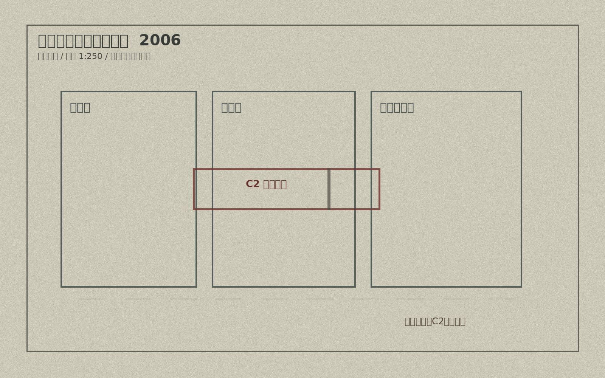
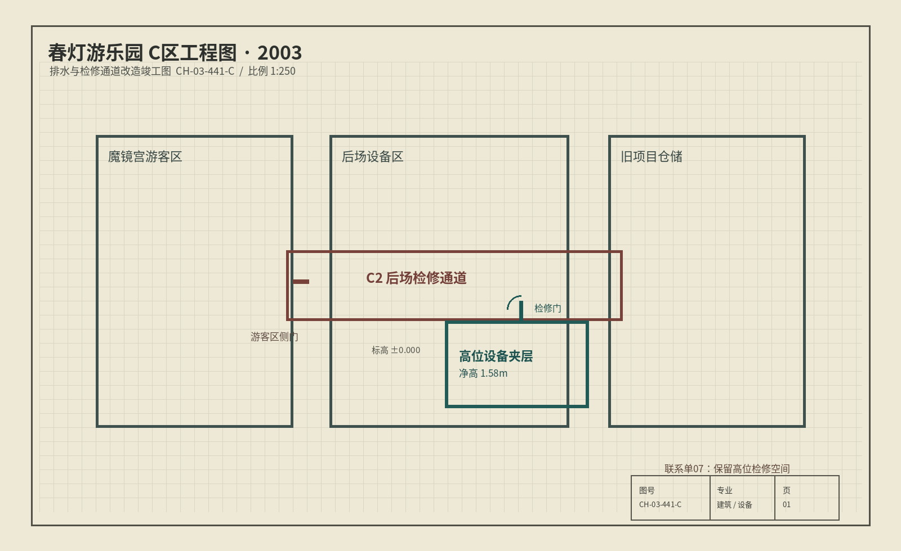

图纸阅览 / C区
三张图纸来自不同档案卷，数字化时已统一到同一视图。本次历史结构核验不要求逐项识读图纸，请先看“后场疏散通道”上方，确认三个年份的画法是否一致。
复核范围：2003竣工图与2006消防图。尺寸数字、排水管线和房间名称不在本次复核范围内；只登记后来备案图里没有画出的局部结构。

CH-99-207-A / 原始建筑总图 / 1999（基准版本，可用来确认它原先是否存在）
2003 / 2006 同位置对照
左侧覆盖：2003竣工图右侧底图：2006消防图


两张图已经按相同比例放好，不需要自己“校准”。拖动分界线时，只比较同一个位置有没有多出或少掉东西即可。
版本差异复核
找到差异后，切回2003竣工图，直接点在对应位置。备注栏仅供说明，可留空；系统以图上标记位置为复核依据。
建议顺序：看2003 → 看2006 → 拖动一次对照图 → 回到2003点出差异。1999图是补充证据，用来判断这处结构是不是原建筑就有。